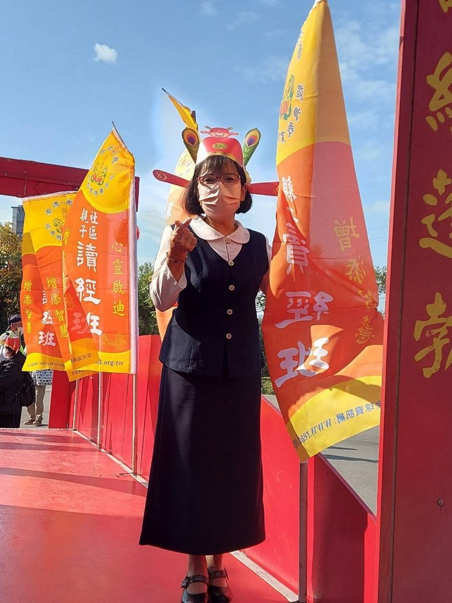
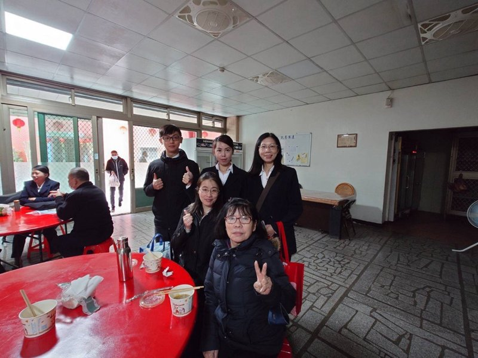

許寶媧
正德佛堂



五十年，我們都在這裡
—— 許寶媧
後學許寶媧，民國六十年前後便已求道，然當時懵懵懂懂，僅因引保師苦口婆心成全，後學才前往求道。後來因緣變化，後學又再度重求，民國一百零六年再次求道後，才漸漸真正踏入道場。
這一次，後學發心上了五種班，起初在台中道場上課，為的是要成全在台中的姐姐。後來讀到崇德班時，便回到新竹道場，開始投入廚房、打掃等道務運作。每次法會，後學都去學習打掃化妝室，因為那裡比較少人願意去打掃。後學也感恩天恩師德，讓後學有機會去了愿。這樣一晃，也快十年了。
進入道場後，後學深感修辦人生帶來了很大的改變。第一，當後學心情不如意的時候，後學會打開手機，看看老師的聖訓。每一句都讓後學深深的感動，因為老師的詞語彷彿就在跟後學對話。後學常常淚流滿面，內心充滿感動與感恩。
第二，後學自從加入總務組，一路走來，有時候連續三四天都在忙碌。雖然辛苦，但是每天睡一覺起來，就精神飽滿，繼續投入。後學真的很感恩活佛恩師的暗中撥轉，讓後學有體力一直走下去。
感謝天恩師德，後學在有生之年，一定要繼續向前衝，感恩再感恩。
最後，後學祝福正德五十週年慶，希望正德大家庭每個成員都能達標三多四好，今年能夠把金馬獎拿在手中。祝賀正德壇，傳承永續，道務宏展，人才濟濟，年年達標。祈求上天慈悲保佑，李點傳師，政躬康泰、慧命永昌，福慧綿綿。感恩，謝謝大家。
（依許寶媧道親錄音整理，民國115年6月）